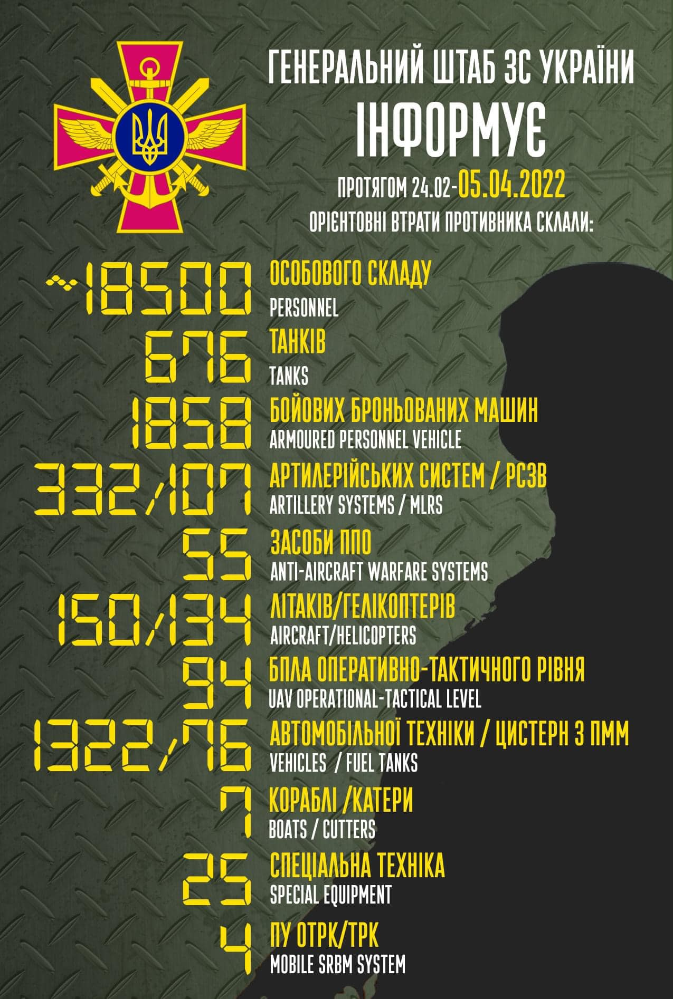

18:00 31.03.2022 р.
Центр стратегічних комунікацій та інформаційної безпеки повідомляє.
Двома колонами вирушили у бік білорусі. Окупанти збираються покинути зону ЧАЕС та Славутич – «Енергоатом»
Окупанти, які захопили Чорнобильську АЕС та інші об‘єкти у Зоні відчуження, двома колонами вирушили в бік українського кордону з республікою білорусь, повідомили в «Енергоатомі».
Наміри покинути ЧАЕС загарбники 31 березня зранку озвучували українському персоналу станції. Але наразі на станції ще залишається невелика кількість російських військових.
Також у НАЕК «Енергоатом» стверджують, що наразі колона окупантів, які тримали Славутич в облозі, формується для руху у бік кордону білорусі.
18:08 31.03.2022 р.
На Чернігівщині українські військові звільнили Лукашівку та Слободу Збройні Сили України звільнили села Лукашівку та Слободу південніше Чернігова, повідомив голова місцевої ОВА В‘ячеслав Чаус. Після окупантів у селах залишилося чимало вибухівки та мін. «Місцеві мешканці змучені, та це не похитнуло віру в Україну», – зауважив Чаус та додав, що до цих сіл нарешті змогли привезти усе необхідне.
ЗСУ звільнило від рашистів Затишшя, Малинівку, Веселе, Зелений Гай та Червоне у Запорізькій області.
Про це повідомило Командування Десантно-штурмових військ Збройних Сил України
18:12 31.03.2022 р.
Сьогодні пів дня не робить приват банк. Добре що ми встигли зняти гроші зранку та скупитись.
Тарас ходив на прогулянку, та обійшов всі магазини – алкоголь ніде не продають. Мабудь то був фейк, що алкоголь дозволили продавати по Білій Церкві.
Настя досі в Польщі була у Вроцлаві, зараз переїхали в якесь друге місто.
Владислав все ще в Чернівецькій області.
18:45 31.03.2022 р.
Окупанти обстріляли колону волонтерів під Черніговом. Одна людина загинула, четверо – важко поранені.
П'ять автобусів потрапили під обстріли, коли намагалися проїхати в оточене місто, щоб евакуювати людей. В автобусі перебували лише цивільні волонтери, повідомила омбудсменка Людмила Денісова.
Внаслідок обстрілу одна людина загинула, чотирьох важко поранено.
Одному з бусів вдалося вирватись на пробитих шинах. Водія поранено, його шпиталізували.
Російські військові не дають вивезти людей з блокованого Чернігова. Десятки тисяч людей у заручниках, без їжі, води та тепла. У той час окупанти щодня обстрілюють житлові квартали з важкої артилерії.
Оперативна інформація станом на 18.00 31.03.2022 щодо російського вторгненняОперативна інформація станом на 18.00 31.03.2022 щодо російського вторгнення
Триває тридцять шоста доба героїчного протистояння Українського народу російському воєнному вторгненню.
Російські окупаційні війська намагаються створити нове угруповання військ на Слобожанському напрямку з метою встановлення контролю над частинами територій Харківської, Луганської та Донецької областей, включаючи блокаду міст Слов’янськ та Краматорськ.
Ворог продовжує атакувати місто Попасна, імовірно, з метою відволікання уваги військового керівництва України від спроб встановлення контролю над Ізюмом та Маріуполем.
На Сіверському напрямку фіксується перекидання до білоруського міста Гомель найманців з країн близького сходу.
За отриманою інформацією, 29 березня, перекинуто 200 найманців до військового аеродрому Гомель. Крім того, росія продовжує перекидання ракетних підрозділів до республіки білорусь з метою збільшення інтенсивності обстрілів балістичними ракетами населених пунктів та об’єктів інфраструктури на території України. Так, в районі Гомеля виявлено прибуття трьох ракетних комплексів “Іскандер” та двох комплексів ППО "С- 300" для їх прикриття.
Залишаючи військову техніку на території України, окупанти все частіше вдаються до її мінування. Крім того, почастішали випадки використання противником мін-пасток.
На тимчасово зайнятих противником територіях він продовжує обмеження пересування місцевого населення, російські загарбники беруть громадян України у заручники та здійснюють вивезення награбованих у мирних громадян товарів.
У російській федерації розпочалась практика подання до судових установ заяв на військове керівництво родичами загиблих у війні з Україною російських військовослужбовців. Зокрема, подібний випадок подачі до суду на командира зафіксовано у 752-у мотострілецькому полку зі складу 3-ї мотострілецької дивізії 20-ї загальновійськової армії Західного воєнного округу.
Сили оборони України продовжують успішно виконувати поставлені завдання, переслідують ворога, що відходить, проривають оборонні позиції окупантів та поступово звільняють українські землі.
07:45 01.04.2022 р.
На Херсонщині ЗСУ звільнили 11 населених пунктів та взяли «трофейну» техніку окупантів
У Херсонській області українські військові визволили 11 населених пунктів, вони повністю перебувають під контролем ЗСУ, повідомили в Угрупованні військ «Південь».
Серед звільнених сіл та селищ: Нововоронцовка, Мала Шестерня, Новогригорівка, Тополине, Князівка, Краснівка, Свободне, Кам’янка, Пригір’я, Кочубеївка, Орлове.
Місцеве населення тепер може отримувати гуманітарну допомогу (медикаменти, продукти харчування).
Під час операції з визволення Херсонщини піхотинці забрали «трофейну» техніку окупантів: танки Т-64, БМП-2, БМД-2, ЗУ-2М.
07:50 01.04.2022 р.
Британія та союзники підсилять Україну артилерією та ППО
Британія та її союзники погодилися надіслати Україні потужнішу зброю, щоб протистояти вторгненню рф, заявив британський міністр оборони Бен Воллес.
«Сьогодні в Україну буде надходити більше летальної військової допомоги. Низка країн виступила з новими ідеями або навіть з більшою кількістю грошей», – сказав Воллес журналістам після того, як прийняв понад 35 міжнародних партнерів на другому Міжнародному засіданні оборони.
Допомога включатиме забезпечення систем протиповітряної та берегової оборони, артилерії більшої дальності та засобів протистояння батареї, бронетехніки, а також ширшу підготовку та матеріально-технічне забезпечення.
14:25 01.04.2022 р.
ЗСУ звільнили понад 20 населених пунктів! Головне зі зведення Генштабу станом на 12:00
Підрозділи ЗСУ відновили контроль над населеними пунктами у Київській області: Демидів, Димер, Литвинівка, Гаврилівка, Козаровичі, Жовтневе, Глибівка, Ясногородка, Талакунь, Сухолуччя, Липівка, Гавронщина, Маковище, Миколаївка, Хмільна.
На Чернігівщині ЗСУ взяли під контроль населені пункти: Рудня, Шевченкове, Бобрик, Стара Басань, Нова Басань, Макіївка, Погреби, Бажанівка, Володимирівка, Шняківка, Сальне, Софіївка, Гаврилівка.
Противник контролює Ізюм та утримує понтонні переправи через річку Сіверський Донець для наступу. Ворог може посилювати війська на Ізюмському напрямку за рахунок окремих підрозділів 1-ї танкової та 20-ї загальновійськової армій.
На Донеччині окупанти зосередилися на взятті під контроль Попасної та Рубіжного, а також встановленні контролю над Маріуполем.

13:13 05.04.2022 р.
Загальні бойові втрати противника з 24.02 по 05.04 орієнтовно склали
/ The total combat losses of the enemy from 24.02 to 05.04 were approximately:
особового складу / personnel - близько/ about 18500 осіб,
танків / tanks ‒ 676 од,
бойових броньованих машин / APV ‒ 1858 од,
артилерійських систем / artillery systems – 332 од,
РСЗВ / MLRS - 107 од,
засоби ППО / Anti-aircraft warfare systems - 55 од,
літаків / aircraft – 150 од,
гелікоптерів / helicopters – 134 од,
автомобільної техніки / vehicles - 1322 од,
кораблі /катери / boats / cutters - 7 од,
цистерн з ПММ / fuel tanks - 76,
БПЛА оперативно-тактичного рівня / UAV operational-tactical level - 94.
Спеціальна техніка / special equipment - 25.
Пускові установки ОТРК/ТРК / mobile SRBM system - 4.
Дані уточнюються. Підрахунок ускладнюється високою інтенсивністю бойових дій.
/ Data are being updated. The calculation is complicated by the high intensity of hostilities.
Бий окупанта! Разом переможемо!
Strike the occupier! Let's win together!
Центр протидії дезинформації при РНБО України: мобільні крематорії призначалися не для російських солдат.
Коментуючи різанину в Бучі, радник голови Офісу Президента України М.Подоляк заявив у своєму Twitter, що російські війська везли в Україну мобільні крематорії, щоб приховати сліди своїх злочинів.
Інсинератор ИН-50.1К – мобільний крематорій призначений для утилізації людських залишків. В зв’язку з тим, що російське командування тривалий час звітувало про відсутність втрат, здавалося, що метою перебування крематоріїв на території України було спалювання трупів російських солдат.
Насправді, щоб приховати сліди військових злочинів, російська армія планувала спалювати тіла загиблих цивільних осіб. Метод КДБ: «нет тела – нет дела». Під натиском ЗСУ, поспіхом втікаючи з Київської області, окупанти залишили трупи російських солдат та тіла закатованих українських громадян. Увесь світ побачив задокументовані злочини «русского мира».
Ми не пробачимо, всі військові злочинці будуть покарані!